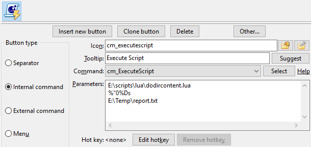

Double Commander can execute Lua scripts via cm_ExecuteScript command.
It is also possible to write content plugins using Lua script, examples can be found in the program folder (plugins/wdx/scripts). The Wiki has a page dedicated to writing plugins. Limitations: only the following data types are supported
Note: When saving scripts, use UTF-8 encoding without BOM.
More informations on Lua script programming language are available on the web on this link.
In order to interpret Lua script file, we need to have a Lua DLL file (Double Commander supports versions 5.1 - 5.4) in the same folder as the executable of Double Commander or in system folder.
By default DC looks for a file with name lua5.1.dll (Windows), liblua5.1.so.0 (Unix or GNU/Linux) or liblua5.1.dylib (macOS(*)). We can change the file name in the Lua library file to use parameter manually.
We can use DLL file from LuaJIT project. LuaJIT combines a high-speed interpreter, written in assembler, with a state-of-the-art JIT compiler. Also we get FFI library, which allows calling external C functions and using C data structures from pure Lua code.
DC distributives for Windows have Lua DLL by default (in DC 0.9.7 and newer from LuaJIT project), in other cases we may find and install it through our packages manager or compile it. If we're using a 64-bits version of DC, the DLL must be the 64-bits version as well.
Double Commander offer a few libraries of functions for our Lua scripts.
Here is the list of them.
| List of libraries | ||
|---|---|---|
| Library name | Script name | Quick description |
| DC | Double Commander specific functions | |
| SysUtils | Various system functions | |
| Clipbrd | Provides external clipboard functionality | |
| Dialogs | Interacts with user | |
| LazUtf8 | UTF-8 string functions | |
| OS | Functions related with the operating system | |
This library contains Double Commander specific functions.
It provides all its functions inside the table DC.
| DC library | |
|---|---|
| Function name | Description |
DC.LogWrite |
DC.LogWrite(Message, MsgType, bForce, bLogFile) Write a message to the log window. Here is the description of each field:
|
DC.CurrentPanel |
iPanel = DC.CurrentPanel() Get active panel: returns 0 if left panel is active or 1 if right. DC.CurrentPanel(iPanel) Set active panel: left panel if iPanel equal 0 or right if 1. |
DC.ExecuteCommand |
DC.ExecuteCommand(Command, Param1, Param2,...,ParamX) This allows the script to invoke internal commands of DC. The Command is holding the actual internal command name. We may provide as many Param... as command may support. |
Note: Scripts work in the main thread of Double Commander, so sometimes sequential execution of commands for navigation may not work (for example, large directories, slow disk), in this case try to disable Load file list in separate thread in the settings.
In this example, we wrote a simple script that will do the following:
-- 1. Focus on right panel. DC.ExecuteCommand("cm_FocusSwap", "side=right") -- 2. Close all tabs. DC.ExecuteCommand("cm_CloseAllTabs") -- 3. Switch to a specific directory. DC.ExecuteCommand("cm_ChangeDir", "E:\\FakeKey\\Documents\\Music") -- 4. Focus on left panel. DC.ExecuteCommand("cm_FocusSwap", "side=left") -- 5. Close all tabs. DC.ExecuteCommand("cm_CloseAllTabs") -- 6. Switch to a specific directory. DC.ExecuteCommand("cm_ChangeDir", "C:\\Users\\Public\\Music") -- 7. Open a new tab. DC.ExecuteCommand("cm_NewTab") -- 8. Switch to a specific directory. DC.ExecuteCommand("cm_ChangeDir", "E:\\VirtualMachines\\ShareFolder")
Using the internal command cm_ExecuteScript, we may configure a tool bar button that will execute our script.
Assuming this script file is E:\scripts\lua\music.lua, we could have the button configured this way:
Also, we may use the internal Double Commander Editor for editing our scripts.
If filename has .lua file extension, it will be recognized by internal editor and it will provide us syntax highlighting specific for this Lua language:

This library contains various system functions.
It provides all its functions inside the table SysUtils.
| System library | |||||||||||
|---|---|---|---|---|---|---|---|---|---|---|---|
| Function name | Description | ||||||||||
SysUtils.Sleep |
SysUtils.Sleep(Milliseconds) Suspends the execution of the script for the specified number of Milliseconds. |
||||||||||
SysUtils.GetTickCount |
SysUtils.GetTickCount() Returns an increasing clock tick count. It is useful for time measurements, but no assumptions should be made as to the interval between the ticks. |
||||||||||
SysUtils.FileExists |
bFlagExists = SysUtils.FileExists(FileName) Check whether a particular file exists in the filesystem. Returns in bFlagExists the value |
||||||||||
SysUtils.DirectoryExists |
bFlagExists = SysUtils.DirectoryExists(Directory) Checks whether Directory exists in the filesystem and is actually a directory. If this is the case, the function returns in bFlagExists the value |
||||||||||
SysUtils.FileGetAttr |
Attr = SysUtils.FileGetAttr(FileName) Returns in Attr the attribute settings of file FileName. See the detail explanations of the returned value here. |
||||||||||
SysUtils.FindFirst |
Handle, FindData = SysUtils.FindFirst(Path) Looks for files that match the Path, generally with wildcards. If no file is found, Handle will be When at least one item is found, the returned Handle may be used in subsequent The FindData table contains information about the file or directory found. The field of the FindData table are:
|
||||||||||
SysUtils.FindNext |
Result, FindData = SysUtils.FindNext(Handle) Finds the next occurrence of a search sequence initiated by FindFirst by re-using the Handle returned previously. Returned Result will be non-nil if a file or directory is found and will be The same notes mentioned for Remark: The last |
||||||||||
SysUtils.FindClose |
SysUtils.FindClose(Handle) Ends a series of Frees any memory used by these calls. It is absolutely necessary to do this call, or memory losses may occur. |
||||||||||
SysUtils.CreateDirectory |
bResult = SysUtils.CreateDirectory(Directory) Create a chain of directories, Directory is the full path to directory. Returns |
||||||||||
SysUtils.CreateHardLink |
bResult = SysUtils.CreateHardLink(Path, LinkName) Create the hard link LinkName to file Path. Returns |
||||||||||
SysUtils.CreateSymbolicLink |
bResult = SysUtils.CreateSymbolicLink(Path, LinkName) Create the symbolic link LinkName to file or directory Path. Returns |
||||||||||
SysUtils.ReadSymbolicLink |
sTarget = SysUtils.ReadSymbolicLink(LinkName, Recursive) Read destination of the symbolic link LinkName. If Recursive is Returns the path where the symbolic link LinkName is pointing to or an empty string when the link is invalid or the file it points to does not exist and Recursive is |
||||||||||
SysUtils.ExtractFileName |
sName = SysUtils.ExtractFileName(FileName) Extract the filename part from a full path filename. The filename consists of all characters after the last directory separator character ("/" or "\") or drive letter. |
||||||||||
SysUtils.ExtractFilePath |
sPath = SysUtils.ExtractFilePath(FileName) Extract the path from a filename (including drive letter). The path consists of all characters before the last directory separator character ("/" or "\"), including the directory separator itself. |
||||||||||
SysUtils.ExtractFileDir |
sDir = SysUtils.ExtractFileDir(FileName) Extract only the directory part of FileName, including a drive letter. The directory name has NO ending directory separator, in difference with |
||||||||||
SysUtils.ExtractFileDrive |
sDrive = SysUtils.ExtractFileDrive(FileName) Extract the drive part from a filename. Note that some operating systems do not support drive letters. |
||||||||||
SysUtils.ExtractFileExt |
sExt = SysUtils.ExtractFileExt(FileName) Return the extension from a filename (all characters after the last "." (dot), including the "." character). |
||||||||||
SysUtils.GetAbsolutePath |
sName = SysUtils.GetAbsolutePath(FileName, BaseDirectory) Returns the absolute (full) path to the file:
|
||||||||||
SysUtils.GetRelativePath |
sName = SysUtils.GetRelativePath(FileName, BaseDirectory) Returns the filename relative to the specified directory:
If FileName and BaseDirectory contain the same value, the function will return an empty string (""). |
||||||||||
SysUtils.MatchesMask |
bResult = SysUtils.MatchesMask(FileName, Mask, MaskOptions) Returns MaskOptions (optional parameter, 0 by default) is set as the sum of the following values:
|
||||||||||
SysUtils.MatchesMaskList |
bResult = SysUtils.MatchesMaskList(FileName, MaskList, Separator, MaskOptions) Returns Separator and MaskOptions (see above) are optional parameters. |
||||||||||
SysUtils.PathDelim |
SysUtils.PathDelim The character used by the current operating system to separate directory names in the full file name. In Unix/Linux system the directory separator will be "/" and in Windows it will be "\". |
||||||||||
FileGetAttr returns the attribute settings of file FileName.
The attribute is a OR-ed combination of the following constants:
| Constants uses in SysUtils.FileGetAttr returned value | |
|---|---|
| Value | Signification |
0x00000001 faReadOnly |
The file is read-only. |
0x00000002 faHidden |
The file is hidden. In Unix/Linux, this means that the filename starts with a dot. |
0x00000004 faSysFile |
The file is a system file. In Unix/Linux, this means that the file is a character, block or FIFO file. |
0x00000008 faVolumeId |
Volume Label. Only for DOS/Windows on a plain FAT (not VFAT or Fat32) filesystem. |
0x00000010 faDirectory |
File is a directory. |
0x00000020 faArchive |
File is archived. Not possible in Unix/Linux. |
0x00000400 faSymLink |
File is a symbolic link. |
| Note: In case of an error, -1 is returned. | |
See an example in the next section.
This following script is an example of usage of the SysUtils.FileGetAttr.
When the parameter is detected to be a directory, it will open a new tab in the active panel and switch to it.
local params = {...} local myfileattr if #params == 1 then -- We got at least one parameter? myfileattr = SysUtils.FileGetAttr(params[1]) if myfileattr > 0 then -- We got a valid attribute? if math.floor(myfileattr / 0x00000010) % 2 ~= 0 then -- bit 4 is set? So it's a directory. DC.ExecuteCommand("cm_NewTab") DC.ExecuteCommand("cm_ChangeDir", params[1]) end end end
In the above example, the params[1] is the 1st parameter passed to the script.
When using the internal command cm_ExecuteScript, it will will be the first parameter passed after the script filename.
So in our example, we may program a sample toolbar button like the following:
In this example, the parameter %"0%p will be passed to the script. This will represent, unquoted, the filename of the item currently selected in the active panel at the moment we press the toolbar button.
In the following script example, we'll scan the content of the directory we received in parameter and store resulting data into a text file with the filename passed as a second parameter.
This will give us a good idea of the usage of FindFirst, FindNext and FindClose.
local params = {...} if #params == 2 then -- We got our 2 parameters? local Result = nil local OutputFile = nil OutputFile = io.output(params[2]) local Handle,FindData = SysUtils.FindFirst(params[1] .. "\\*") if Handle ~= nil then repeat io.write(FindData.Name .. "\r") io.write(FindData.Size .. "\r") io.write("---------------\r") Result,FindData = SysUtils.FindNext(Handle) until Result == nil SysUtils.FindClose(Handle) io.close(OutputFile) end end
In the above example, we need to pass two parameters to our script:
So it's easy to configure a toolbar button using the internal command cm_ExecuteScript and pass the parameter to accomplish all this.

In this example, the parameter %"0%Ds will be passed to the script as the first parameter. This will represent, unquoted, the directory displayed by the active panel.
Double Commander may provide external clipboard functionality to our Lua scripts.
Following table gives us the related functions:
| Clipboard library | |
|---|---|
| Function name | Description |
Clipbrd.Clear |
Clipbrd.Clear() Clear the content of the clipboard. |
Clipbrd.GetAsText |
StringVar = Clipbrd.GetAsText() Get the current text content of the clipboard to assigned it to StringVar. |
Clipbrd.SetAsText |
Clipbrd.SetAsText(StringVar) Store in the clipboard the text content of StringVar. |
Clipbrd.SetAsHtml |
Clipbrd.SetAsHtml(Html) Adds html-formatted text Html to the clipboard ( This contents will be inserted in applications which support this clipboard format, like MS Word, LO Writer, etc. It's correct to store data with both For example we may have this:
If we switch to Notepad attempting to paste something, it will paste in plain text the message we copied with |
The following example is using three functions related with the clipboard: Clear, GetAsText and SetAsText.
It's a relative long script but it's good to put together a few functions we've seen above.
It assumes our active panel is currently into a directory with many source text files.
It also assumes we currently have in clipboard a single word and that it will receive as a single parameter the current active folder.
The script will scan the file in that current level of directory and will read the content of them one by one to detect text line that containts the word that was in clipboard.
Then, the filenames of the files that contain at least one line with that word will be place into the clipboard.
Then, the script will use the internal command cm_LoadSelectionFromClip and the files that have the words will then be selected.
Also, at the end, we put back in our clipboard the original word that needed to be searched.
local params = {...} local Result = nil local myfileattr local bFound = false local sCompleteFilename = "" local InputFile = nil local line = "" local iPosS local iPosE local sFileToSelect = "" local sSearchString = "" if #params == 1 then -- We got our parameter? sSearchString = Clipbrd.GetAsText() -- Get the expression to search. Clipbrd.Clear() -- Making sure we have nothing in clipboard. DC.ExecuteCommand("cm_MarkUnmarkAll") -- Make sure nothing is selected. -- Let's scan one by one all the files of our directory. local Handle,FindData = SysUtils.FindFirst(params[1] .. "\\*") if Handle ~= nil then repeat sCompleteFilename = params[1] .. "\\" .. FindData.Name myfileattr = SysUtils.FileGetAttr(sCompleteFilename) if myfileattr > 0 then -- We got a valid attribute? -- We need file, not directory! if math.floor(myfileattr / 0x00000010) % 2 == 0 then -- Let's now read the file line by line until the the end OR a found. InputFile = io.open(sCompleteFilename, "r") bFound = false while bFound == false do line = InputFile:read() if line == nil then break end iPosS, iPosE = string.find(line, sSearchString) if iPosS ~= nil then bFound = true end end if bFound == true then sFileToSelect = sFileToSelect .. FindData.Name .. "\n" end io.close(InputFile) end end Result,FindData = SysUtils.FindNext(Handle) until Result == nil SysUtils.FindClose(Handle) end -- If we've found something, select it! if sFileToSelect ~= "" then Clipbrd.SetAsText(sFileToSelect) DC.ExecuteCommand("cm_LoadSelectionFromClip") end Clipbrd.SetAsText(sSearchString) -- Restoring what we had in clipboard. end
This library allows our scripts to interact with user to display message, prompt for answers, etc.
Following table gives us the related functions:
| Dialogs library | |
|---|---|
| Function name | Description |
Dialogs.MessageBox |
ButPressed = Dialogs.MessageBox(Message, Title, ButFlags) Will diplay a message box prompting a user to click a button which will be returned by the function. Here is the description of each field:
|
Dialogs.InputQuery |
bAck, sAnswer = Dialogs.InputQuery(Title, Msg, bMask, sDefault) Will display a requester box where user may enter a string value. Here is the description of each field:
|
Dialogs.InputListBox |
sAnswer = Dialogs.InputListBox(Title, Msg, Items, sDefault) Displays a dialog box to allow the user to choose from a list of items. Here is the description of each field:
|
The buttons displayed in the box displayed by Dialogs.MessageBox function are controlled by a OR'ed value with one of the following:
| Constant of ButFlags regarding the buttons displayed of Dialogs.MessageBox | |
|---|---|
| Constant value | Buttons displayed, from left to right |
0x0000 MB_OK |
|
0x0001 MB_OKCANCEL |
|
0x0002 MB_ABORTRETRYIGNORE |
|
0x0003 MB_YESNOCANCEL |
|
0x0004 MB_YESNO |
|
0x0005 MB_RETRYCANCEL |
|
The style of the box displayed by Dialogs.MessageBox function are controlled by a OR'ed value with one of the following:
| Constant of ButFlags regarding the icon and style of Dialogs.MessageBox | |
|---|---|
| Constant value | Style of window |
0x0040 MB_ICONINFORMATION |
|
0x0030 MB_ICONWARNING |
|
0x0020 MB_ICONQUESTION |
|
0x0010 MB_ICONERROR |
|
The default active button of the box displayed by Dialogs.MessageBox function are controlled by a OR'ed value with one of the following:
| Constant of ButFlags regarding the default button of Dialogs.MessageBox | |
|---|---|
| Constant value | Default button |
0x0000 MB_DEFBUTTON1 |
Default will be the first one on left |
0x0100 MB_DEFBUTTON2 |
Default will be the second one from left |
0x0200 MB_DEFBUTTON3 |
Default will be the third one from left |
The number returned by the Dialogs.MessageBox function represent the button user has pressed according to the following:
| ButPressed value returned based on button pressed of Dialogs.MessageBox | |
|---|---|
| Constant value | Button pressed |
0x0000 mrNone |
No button pressed |
0x0001 mrOK |
|
0x0002 mrCancel |
|
0x0003 mrAbort |
|
0x0004 mrRetry |
|
0x0005 mrIgnore |
|
0x0006 mrYes |
|
0x0007 mrNo |
|
Note: If we press the "x" in top right or press Esc to close the window, then the value of the button "Cancel" is will returned.
Here is a little script using Dialogs.MessageBox and the resulting window that will be displayed:
-- Buttons displayed MB_OK = 0x0000 MB_OKCANCEL = 0x0001 MB_ABORTRETRYIGNORE = 0x0002 MB_YESNOCANCEL = 0x0003 MB_YESNO = 0x0004 MB_RETRYCANCEL = 0x0005 -- Box style MB_ICONINFORMATION = 0x0040 MB_ICONWARNING = 0x0030 MB_ICONQUESTION = 0x0020 MB_ICONERROR = 0x0010 -- Default button MB_DEFBUTTON1 = 0x0000 MB_DEFBUTTON2 = 0x0100 MB_DEFBUTTON3 = 0x0200 -- Returned button pressed mrNone = 0x0000 mrOK = 0x0001 mrCancel = 0x0002 mrAbort = 0x0003 mrRetry = 0x0004 mrIgnore = 0x0005 mrYes = 0x0006 mrNo = 0x0007 ButFlags = MB_YESNO + MB_ICONQUESTION + MB_DEFBUTTON2 ButPressed = Dialogs.MessageBox("Do you want to quit?", "Question", ButFlags) if ButPressed == mrYes then DC.ExecuteCommand("cm_Exit") end

Here is a little script using Dialogs.InputQuery and the resulting window that will be displayed:
bAck, sAnswer = Dialogs.InputQuery("Identification", "Enter your name:", false, "John") if bAck == true then Dialogs.MessageBox("Hello " .. sAnswer .. "!", "Welcome!", 0x0040) end
This library provides basic support for UTF-8 encoding.
It provides all its functions inside the table LazUtf8.
| UTF-8 library | |
|---|---|
| Function name | Description |
LazUtf8.Pos |
Result = LazUtf8.Pos(SearchText, SourceText, Offset) Search for substring in a string, starting at a certain position. The search is case sensitive. Returns the position of the first occurrence of the substring SearchText in the string SourceText, starting the search at position Offset (default 1). If SearchText does not occur in SourceText after the given Offset, zero is returned. |
LazUtf8.Copy |
Result = LazUtf8.Copy(Source, Index, Count) Copy part of a string. Copy returns a string which is a copy if the Count characters in Source, starting at position Index. If Count is larger than the length of the string Source, the result is truncated. If Index is larger than the length of the string Source, then an empty string is returned. |
LazUtf8.Length |
Result = LazUtf8.Length(String) Returns the number of UTF-8 characters in the string. |
LazUtf8.UpperCase |
Result = LazUtf8.UpperCase(String) Receives a string and returns a copy of this string with all lowercase letters changed to uppercase. |
LazUtf8.LowerCase |
Result = LazUtf8.LowerCase(String) Receives a string and returns a copy of this string with all uppercase letters changed to lowercase. |
LazUtf8.ConvertEncoding |
Result = LazUtf8.ConvertEncoding(String, FromEnc, ToEnc) Convert String encoding from FromEnc to ToEnc. List of supported encoding values:
In the Windows with Russian locale:
|
This library contains functions related with the operating system where Double Commander is running.
Here is the list of available functions in this library:
| OS library | |
|---|---|
| Function name | Description |
os.execute |
ResultCode = os.execute(Command) Will execute Command as it would be typed on the command-line and return the result code of the operation. The Command could either be:
|
os.tmpname |
TempFileName = os.tmpname() Will return a filename to use as a temporary filename. |
os.remove |
bResult, ErrorStr, ErrorNum = os.remove(FileName) Will delete the file or the directory with the name FileName. If it works, function returns If it fails, function returns three things:
|
os.rename |
bResult, ErrorStr, ErrorNum = os.rename(OldName, NewName) Will rename the file OldName with the new name NewName. If it works, function returns If it fails, function returns three things:
|
os.getenv |
Value = os.getenv(VariableName) Will return the Value of the variable VariableName passed in parameter. |